Newly single, he sends his soul out of his body on a rooftop dance floor, out to a burning planet to be cooled by angels' moon-salted ice water, and brings it back to breathe in the night.

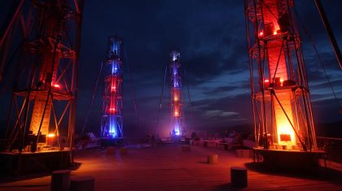


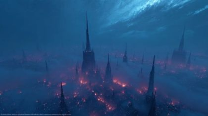
The poem
The poem is heartbreak handled by stepping out of yourself. The soul escapes and leaves 'him' on the dance floor, now 'just flesh and bones', because 'rejection and heartache hit differently when there are no feelings afloat'. The poem is written as stage directions: 'I want my soul now to imagine...', 'Let's watch strangers collide', 'Now let us put my soul...', 'Now bring my soul back'. He directs himself like a puppet, which is our medium's own logic. The body stays below in a crowded floor of sweated perfumes and temptations, the last one to leave, inside 'the walls of an escape that few pleasures offer us'.
The soul's trip is cosmic and physical: an open field at the equator of a planet larger and hotter than ours, then ice baths salted from the closest moons, poured by angels of the newest religions, caught in a flash of strobe. 'Only infinity will tell' whether that grace curses or blesses. The pivot is L10-11, 'Now bring my soul back to my body to lean back, breathe in the smoke': the split heals into acceptance, 'how good it is to finally get acquainted with the night', ending on unfamiliar yet relatable mountains and wandering thoughts within reach.
Look
Three lights: the rooftop in crimson and violet with hard white strobe, the equator plain in flat orange glare with no shadows, and the return in soft smoke. The body cards are opaque painted corrugated card; POET_SOUL is the same puppet re-cut from frosted vellum or tracing paper, backlit so the brads show as dark dots inside the glow, which says it is the same man. Water is clear acetate strips with white ink highlights; salt is torn white paper crumbs; smoke is layered tracing paper.
Our best elements
The strongest things we already have for this poem: generated footage, Atlantis views, found film and painted kit sheets.
rooftop_club plate (08.1, 08.2, 08.5): the dance floor deck under a pricked starry sky
Figure-free, in the poem's district (ankhu); the hanging cloths are vertical panes the archive can open in, and the deck is open floor for puppets
Alternative club plate and source for the strobe towers
Empty roof, crimson and blue towers that read as club rigging; strong silhouettes for card layering
08.7a POET on the ledge, his back to the club
Figure-free; the rail line gives the ledge, and haze over the city leaves room to paint the far mountain range
08.3b soul watching all of Atlantis lit up
Figure-free top-down city glow; a small soul card in the foreground reads clearly against the dark
08.3b alternative aerial, 'blue and pink throughout the city'
Already blue with pink-red embers; reads as Atlantis, not a generic city

equator_plain base: grade it to orange day
A flat open plain to the horizon with a single light source overhead, empty of figures
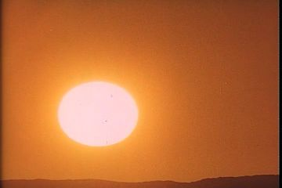
08.4 the white sun of the larger, hotter planet; open it in the sky over the soul
A huge, bright disc in orange; big and bright enough to read as an archive opening

08.4b heat glare cutaway; colour key for the planet
Burnt-out orange air; its tiny figure is far and small enough to crop out
Model for the ice_bath_basin card and an insert of the basin tipping
A wide, shallow, rimmed bowl, flat-lit, the right shape for the angels' basins

Overhead string-light layer of the rooftop; the 1950s rhyme for the passage's 1953 dance-floor film
Bright points on black composite cleanly over our sky card

atlantis_street_night plate (08.7b-d), where he sees the EX
No people, a row of tall lit panes, and strong reflections; the crowd and EX cards walk in front
08.6b 'breathe in the smoke': the soul's glow settles into his chest
Shows the return as breath; composite it inside the body card's chest window

Back layer for the time-shifted dancers in 08.1a
The blur is the time-shift smear already; our sharp puppet POET in front moves at normal speed

Strobe peak / the soul's exit and return flash
Pure white-violet light frame; cut it on the frame where the soul card separates
What we need
- POET_SOUL: a full second set of POET cards in vellum (float front, float threequarter, float back, crouch shielding eyes, stand opening). No sheet has it
- Angels: the angels.08 layout has no wing cells, though the costume note says wings are their own cards; its style strip shows POET's track suit. Wing cards and robe drapery are needed
- An equator_plain plate in daylight: a flat orange plain with a barely curved horizon and equator marker posts. view_071 is night; grade it or generate it
- Mountains: no plate has the 'unfamiliar yet relatable' double range beyond the city. gen_48ddecbc79 has mountains, but a POET-like generated figure fills a third of the frame
- ice_bath_basin cards (full / tipping / empty) and acetate water-pour strips
- Dancer costumes club_dress / club_shirt / club_jacket: layouts only, no palette set
- ex.08.action is labelled 'stand · front'. He must be back and threequarter_back only (walk, hand in pocket)
- Archive of real dance floors seen from above, and of people colliding while dancing (1950s-80s), for the time-shift
Characters
POET kit →
The body left on the floor: flesh and bones, sweating, the last one to leave, then the man who leans back and breathes the night in
Costume. Black track jacket with red piping from shoulders down the chest, black track trousers, black Chelsea boots, sunglasses plug-in card. Add a painted sweat-sheen card (white ink dashes) for 08.4c and a wet version (darker jacket, highlight streaks) after the pour
Expressions. tired (mouth slack, head slightly down), pain (wince card, jaw set), panting (mouth open), surprised (water hits), calm (head back, eyes shut behind lenses), joy (slight smile at the night), sad (on the ledge)
Hands. relaxed, open (arms opening under the water), flat_push (through the crowd), in_pocket
Cards to paint. head: down / wince / head-back / smile front; torso: wet jacket variant; body: sit on ledge threequarter_back; body: lean back threequarter; sweat-sheen overlay card
poet.08.action covers dance, lean, ledge-sit and reach (good: all four non-standard poses) but omits the front stand-and-wince and the head-back-under-water, the poem's two key body beats, and has no POET_SOUL entry
Its action sheet for this poem is on Character Kits v2.
open the action sheet →| action | beats | how the card does it |
|---|---|---|
| soul leaves (passage) | swaying on the beat -> strobe flash -> body sags onto one hip as the vellum soul lifts out -> head lowers -> hold | Body: hip brad tilts the pelvis, swap to the head-down card. Soul: the same cards in vellum, offset 2 cm up and moved in code; both on the same hip mark |
| wince on the beat | still -> head dips and knees give 1 cm -> back up, repeated each bar | Neck brad nods 8 degrees; whole body card drops 1 cm; no limb motion |
| water baptism | angels tip -> water strips fall -> arms open, head back -> hold, dripping | Shoulder brads swing to the open hands; swap to the head-back card; then swap the jacket to the wet torso card |
| lean back and inhale | soul settles -> chest rises -> lean back at the hip -> smile card | Hip brad tilts the torso back 12 degrees; chest card scales 3% in code; head-back to smile replacement |
| reach for the EX | sees him -> pushes through -> arm extends -> bodies close -> arm drops | threequarter_back body; L flat_push hand, R open hand at full extension on the shoulder brad; the fan cards slide across in front |
POET SOUL kit →
The same man, outside himself: watches, flies over Atlantis, burns on the equator, is cooled, and comes home
Costume. Exactly POET's cards and costume lines, re-cut in frosted vellum and painted only in white and pale blue ink outlines; sunglasses card kept, faint
Expressions. sad (looking down at the body), strain / pain (in the heat), calm (cooled)
Hands. relaxed, open, flat_push (shielding the eyes)
Cards to paint. vellum: full POET body set front/threequarter/back; vellum: float body; vellum: crouch body; vellum heads: down, profile-away, level
Not on any action sheet. Build it from the poet.red_black_sunglasses layouts at the same scale so it can register exactly on the body
No action sheet exists for this poem yet.
| action | beats | how the card does it |
|---|---|---|
| rise | separates -> looks back down -> floats up above the raised hands -> arms open | Float pose: legs locked together at the hips, toes pointed; neck brad turns head down; moved by code on a slow ease |
| shield from the sun | stands braced -> crouches -> hand flat over the brow, head turned away -> hold | Crouch replacement body in vellum; flat_push hand on the elbow brad held at the brow |
| cooled | water reaches -> straightens -> head lifts -> colour shifts orange to blue | Same cards; the colour change is a gel over the backlight |
ANGELS kit →
Angels of the newest religions who tip ice baths over his body in the middle of the club
Costume. Long white robes painted in grey-blue folds on white card, large white feathered wings on separate cards brad-pinned at the shoulder blades, bare feet, pale-blue enamel basin. Faces calm, in profile and three-quarter; they/them
Expressions. calm
Hands. grip(ice_bath_basin) both hands
Cards to paint. wing L / wing R (open, half-folded); robe body float front + threequarter; heads: calm front, threequarter; two-hand basin grip
angels.08.action has float front and float threequarter and the grip(ice_bath_basin) cell, which is right, but no wing cells, and its style strip shows POET's suit and Chelsea boots, so it may produce suited angels
Its action sheet for this poem is on Character Kits v2.
open the action sheet →| action | beats | how the card does it |
|---|---|---|
| tip and pour | hover -> lean in -> tip the basin 40 degrees -> water falls -> hold the empty basin | Both hands share one basin card pinned at both wrists; tip by rotating the forearms; wings flap 2 frames on the shoulder-blade brads |
DANCERS kit →
The crowd that keeps dancing, collides, sparks, trails a hand across his arm, and thins until he is last; later the fans on the sidewalk
Costume. club_dress (sequin dress, painted as silver ink dots), club_shirt (open satin shirt), club_jacket (cropped jacket). Keep them in crimson, violet and white so POET's black reads
Expressions. joy, calm
Hands. open, fist, wave, relaxed
Cards to paint. club_dress front/threequarter_back; club_shirt profile reach; club_jacket back walk
party.08.action poses are complete (dance front/threequarter/back/profile/threequarter_back, reach profile); it needs painting and colour assignment
No action sheet exists for this poem yet.
| action | beats | how the card does it |
|---|---|---|
| collide and spark | two reach -> palms meet -> spark card -> colour ripples outward | Both profile reach poses; spark is a gold foil card at the touch point |
EX kit →
Seen once, back to us, walking away down the night street; POET cannot reach him
Costume. Dark olive bomber jacket with ribbed hem, dark jeans, white low sneakers; back of head only
Expressions. unseen
Hands. in_pocket, relaxed
Cards to paint. back walk two-leg positions; threequarter_back walk; in_pocket hand
ex.08.action's single frame is mislabelled 'stand · front'. Correct it to back/threequarter_back walk. The in_pocket hand cell is right
Its action sheet for this poem is on Character Kits v2.
open the action sheet →| action | beats | how the card does it |
|---|---|---|
| walk away, never turns | walks -> fan card crosses -> gone | Back walk cycle on hip brads, L hand in_pocket card; slides away in code, a fan card wipes him |
Props
Sorted by priority. Each has its design, how to build it, the references found in the archive and our footage, and a prompt for its card sheet.
wide, shallow pale-blue enamel basin brimming with ice water
Layered card 70 cm, pale-blue enamel gouache with a dark rim line and chips, ice cubes as separate clear-acetate shards, frost as dry-brushed white; states: full (level), tipping, pouring (water strip attached), empty
References found
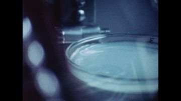


Generation prompt
Prop card sheet: a wide shallow pale-blue enamel basin, flat corrugated-cardboard card, gouache + confident ink line, chipped dark-blue rim, frost dry-brushed white, raw kraft cut edge, brass brads where hands pin to the rim, flat-on even light, plain background; separate cards: 1) basin full and level with floating ice, 2) basin tipped 40 degrees, 3) a long falling-water strip, 4) basin empty, 5) loose ice shards
the enormous white sun of the larger, hotter planet
Card disc 60 cm, white-peach gouache with an uneven ink edge, a heat-ring card behind it; states: normal, flaring (ring scaled up)
Generation prompt
Prop card sheet: an enormous white-peach sun disc, flat corrugated-cardboard card, gouache + confident ink line, raw kraft cut edge, flat-on even light, plain orange background; separate cards: 1) sun disc, 2) heat ring, 3) bent heat-shimmer strip
posts and a painted line marking the planet's equator
Row of card posts 40 cm with a striped band, and a long painted ground line; states: upright, warped by heat (wavy version)
Generation prompt
Prop card sheet: equator marker posts with a red and white band, flat corrugated-cardboard card, gouache + confident ink line, raw kraft cut edge, flat-on even light, plain background; separate cards: 1) marker post, 2) long ground line strip, 3) the post bent wavy by heat
salt from the closest moons, glittering on his skin
Torn white paper crumbs and a white-ink speckle overlay card; states: falling, settled on shoulders, a ring of salt round the soul's pool
Generation prompt
Prop card sheet: salt crystals, flat corrugated-cardboard cards, gouache + confident ink line, raw kraft cut edge, flat-on even light, plain dark background; separate cards: 1) scattered salt crystals, 2) a ring of salt on the ground, 3) a small crescent moon with a salt crust
club strobe and light rig on the roof
Card truss 200 cm with round lamp heads; states: off, crimson, white flash (separate white-lens card)
Generation prompt
Prop card sheet: a rooftop club light tower, flat corrugated-cardboard card, gouache + confident ink line, steel truss, round lamp heads, raw kraft cut edge, brass brads at the lamp pivots, flat-on even light, plain background; separate cards: 1) truss, 2) lamp head unlit, 3) lamp head lit crimson, 4) lamp head white flash
small dark weights that drop and settle at his feet
Black card lumps 5-8 cm with a lead-grey ink sheen; states: falling, settled
Generation prompt
Prop card sheet: small dark lead weights, flat corrugated-cardboard cards, gouache + confident ink line, grey highlight, raw kraft cut edge, flat-on even light, plain background; separate cards: 1) round weight, 2) square weight, 3) teardrop weight
Places
rooftop_club
An open-air rooftop club over Atlantis at night: a deck under a pricked starry sky, light towers, hanging cloths, the city and a double mountain range beyond the ledge. Loud and crowded, but it can empty to one man
Where the archive opens: the hanging cloths (vertical panes, best); the gloss deck floor only if the clip is bright and fills the lower third; the soul's vacated silhouette in the body card (a window cut in his shape)
References: our footage, Atlantis views, found film


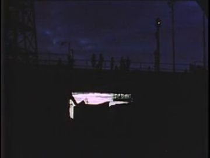
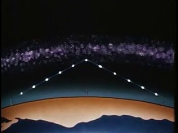
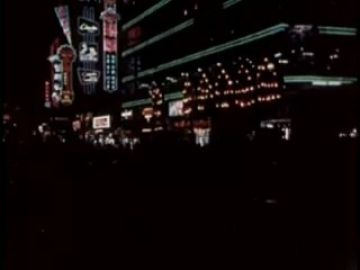
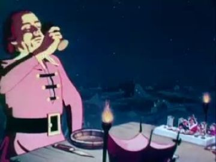
Generation prompt
Wide night plate, no people: an open-air rooftop club deck in a futuristic Atlantis district, hanging cloth panels on lines, two light towers glowing crimson and blue, string lights, a glass rail at the edge, beyond it a glittering city in haze and two pale mountain ranges one behind the other, starry sky, photo-real, 16:9, empty deck in the foreground for puppets
atlantis_aerial
All of Atlantis from far above, lit blue and pink; the soul is a small vellum figure in the foreground
Where the archive opens: none: keep it clean; the soul is the only cut-out
References: our footage, Atlantis views, found film
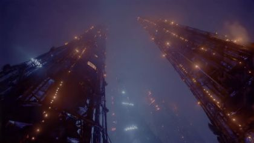


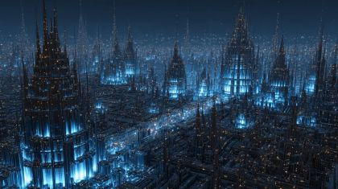
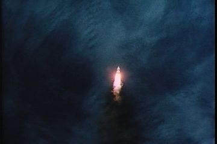
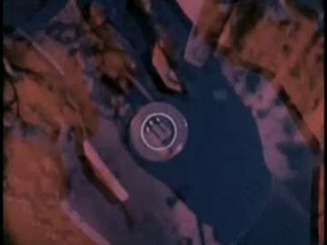
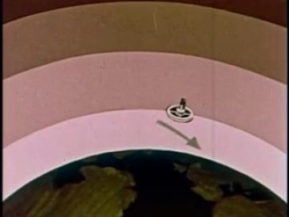
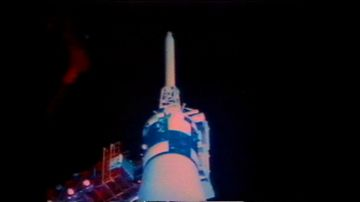

Generation prompt
Use view_070 or gen_d70a8829a9 as is
equator_plain
An endless flat plain on a giant hot planet, its curve barely visible, a huge white sun, air burning off; the soul stands alone, braced
Where the archive opens: the sun disc (big, bright: best); the spreading pool at the soul's feet once it is cooled (bright, so it reads)
References: our footage, Atlantis views, found film


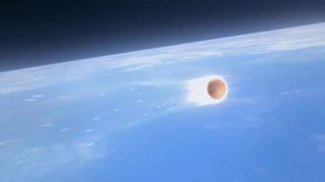
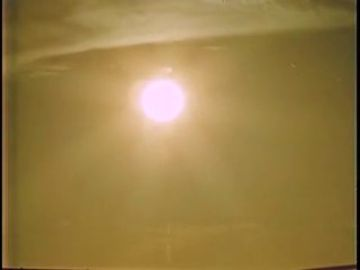
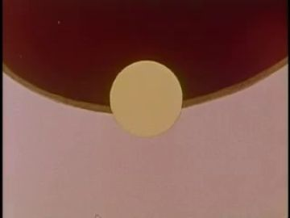
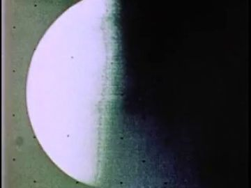
Generation prompt
Wide plate, no people: an endless flat open plain at midday on a giant hot planet, the horizon very slightly curved, cracked pale-orange ground, a row of thin marker posts along a straight painted equator line, an enormous white sun low in a burnt orange sky, heat haze, photo-real, 16:9
atlantis_street_night
The street outside the club: wet pavement, rows of lit shop windows, sidewalk crowds that fawn over him; the EX's back far down it
Where the archive opens: the tall lit shop windows (vertical, best); the wet street reflections
References: our footage, Atlantis views, found film


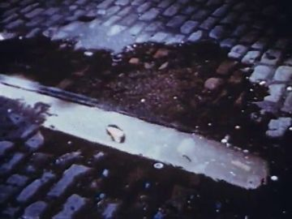
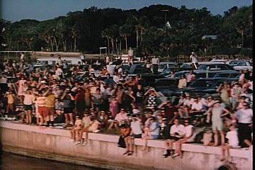
Generation prompt
Use gen_ac146f1212 (crop the parked car out)
Effects
| effect | how, in this cut-out world |
|---|---|
| soul_translucent_glow | Vellum POET cards backlit with a pale-blue gel; dark brad dots show through; a soft bloom in code |
| time_shift_smear | Dancer cards shot on 2s with long-exposure streaks (frame blending); POET on 1s, sharp; view_036 blur behind |
| strobe_lights | Single white frames (arch_767c7faa-ef88 flare) cut every beat in 08.1, never over the soul's exit hold |
| electric_spark | Gold foil spark card at the collision point, then a colour wipe through the crowd cards (gel shift) |
| water_pour | Clear acetate strips with white ink highlights slide down from the tipped basins; droplets are punched acetate dots |
| heat_glare / heat_shimmer | Overexposed orange grade plus a crumpled-acetate strip displacing the horizon |
| club_haze / perfume_haze | Layered tracing-paper strips at three depths; on the inhale, they draw toward his mouth in code |
| falling_weights | Black card lumps dropping with a hard stop and no bounce at his feet in the pov shot |
The puppet passage
his line · 08_L01
“The soul has escaped my body for the moment and left him on the dance floor. He can now just be”
the archive answers · Beginning to Date (1953)
“Crossing that wide dance floor and asking a girl to dance can seem frightening,”
head lowers · floor: the wet, polished floor under string lights, which reflects
Keep. L01 is the poem in one line, and 'head lowers' is the right single gesture: the body left behind lowers its head to the floor where the answer opens. The 1953 Beginning to Date counterpoint (the dance floor as something to cross) is a sharp, funny, sad answer.
Better. The Naraka Market plate is full of generated people, and its wet floor is exactly the faint surface we learned to avoid. Move it to the figure-free rooftop (view_073) and open the 1953 film in a hanging cloth panel behind him, a vertical pane, or make the floor a large gloss card filling the lower third with the film bright and big. Stronger still: have the vellum soul lift out on 'escaped', so the cut-out shows the line literally, and hold the body's head-down card while the archive plays.
Other lines that could carry one:
- 08_L07-08 'my soul in the middle of an open field at the equator...': soul shields its eyes (flat_push at the brow); Moonwalk One's sun (arch_62286625-2260) opens as the sun disc
- 08_L08-09 'Cool me down by pouring unfiltered water out of the ice bath': arms open, head back; the archive opens in the basin's tipped water sheet (bright white water) or the Coney Island basin (arch_5dea32c3-c403) as the basin's face
- 08_L10-11 'bring my soul back to my body to lean back, breathe in the smoke': lean back and hold; the archive plays inside his chest window, as with the lungs (gen_d877af5eab)
- 08_L12-13 'staring into unfamiliar yet relatable mountains': seated on the ledge, one hand reaching; the archive opens in the glass rail panel in front of him, not in the far small mountains
Scene ideas
- The soul as a window: as the vellum soul rises, the body card keeps a POET-shaped cut where the 1953 dance floor film plays, so he is literally hollow on the floor
- Two suns: intercut Moonwalk One's sun (arch_62286625-2260) on the equator with the rooftop strobe heads lit white, matched by size and position, so the heat and the club are the same light
- Basin rhyme: the Coney Island basin (arch_5dea32c3-c403) tips in archive just as our three angel cards tip their card basins; acetate water falls on POET under the strobe
- Over Atlantis: the vellum soul crosses view_070 left to right, small; the string lights from Shopping Can Be Fun (arch_6fb59c98-91d5) are laid over it as the rooftop seen from above
- The last one to leave: on view_073 dancer cards exit frame one by one in time-smear while POET sways on 1s; the hanging cloths flutter, the only other movement
- Breath home: gen_d877af5eab's glowing lungs composited inside his chest as the haze strips pull toward his mouth; the soul's glow dims as the lungs brighten
- Street, no voice: on gen_ac146f1212 the fans' arms cross in front; the EX card walks into the brightest shop window and is lost in its glare
References to look for
| what | where to look |
|---|---|
| time-shifted club | Madonna 'Ray of Light' (Jonas Akerlund, undercranked crowds) and Janet Jackson 'Got 'Til It's Gone' (Mark Romanek), as named in the treatment |
| rooftop and night street after a club | Juice Jones 'The Rain' (treatment's own ref); Wong Kar-wai/Christopher Doyle step-printing in Fallen Angels |
| dance floors in archive | archive: 'teen dance', 'sock hop', 'ballroom', 'discotheque' 1950s-80s; 'Beginning to Date' (1953) and other Coronet social-guidance films |
| angels with basins / baptism | Kehinde Wiley's and Bisa Butler's sacred portraits of Black men; Renaissance angel lustration scenes; Aaron Douglas silhouettes for flat, glowing figures |
| translucent second self in cut-out | Lotte Reiniger layered silhouettes; Michel Ocelot's shadow films (Princes et Princesses); tracing-paper puppetry in shadow theatre |
| giant sun / hot planet | archive: 'solar eclipse', 'sun corona', 'desert heat' science films; NASA 'Moonwalk One' sunrise sequences |
Our footage for this poem
The 20 generated clips and 8 Atlantis views closest to the poem (CLIP, image against its treatment and lines).


The kit
| status | kind | item | source |
|---|---|---|---|
| need | body | POET wet jacket torso + sweat overlay | to paint |
| need | body | POET_SOUL full vellum set incl. float and crouch | re-cut from poet layouts in vellum |
| need | head | POET head-down / wince / head-back / smile cards | to paint into poet.red_black_sunglasses.heads |
| need | prop | Ice bath basin x3 + water strips + ice shards | to generate (prompt above) |
| need | prop | Strobe tower, sun disc, equator posts, salt, weights | to generate |
| need | sound | Club bass thump, ice pour splash, long inhale | to find / record |
| partial | body | POET body cards (front/threequarter/threequarter_back/back) | poet.red_black_sunglasses.body.* (layouts) |
| partial | body | POET ledge-sit, lean-back, reach replacements | poet.08.action frames (unpainted) |
| partial | body | Angels x3 robes + wing cards | angels.angel_white_robe.* (no wing cells: add) |
| partial | body | Dancers club_dress / club_shirt / club_jacket | party.club_*.* packs (layouts) |
| partial | body | EX back walk + in_pocket hand | ex.ex_jacket.* (fix the ex.08 front label) |
| partial | set | Rooftop club plate | view_073 / view_046; mountains still to add |
| partial | set | Equator plain plate in day | view_071 regraded, or generate (prompt in sets) |
| have | fx | Sun, flare, string lights, basin archive | arch_62286625-2260, arch_767c7faa-ef88, arch_6fb59c98-91d5, arch_5dea32c3-c403 |
| have | set | Aerial city and night street plates | view_070, gen_d70a8829a9, gen_ac146f1212 |